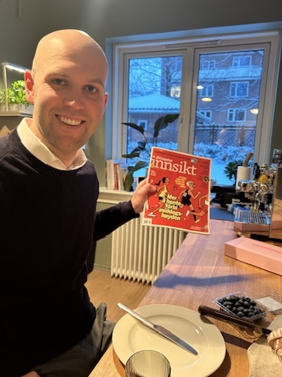

Monrads gate melder om 50% økning
Januar


Skiturer med venner, ski i minus masse, ski med hodeelykt. Monrads, en kafe med uforutsigbare åpningsttider, hadde første (og hittil eneste) åpningsdag i en liten leilighet på tøyen.
Februar
Morten ble 30. Vi feirer med det beste Oslo har å by på, ifølge oss. Morten bruker mye tid i boden (Lisa tror han har en aldri så liten 30 års krise faktisk i den boden). Litt ski med hodelykt her også, til tross for Mazdaens gradestokk viste -27 grader.
Mars

På tøyen pågår det daglig innsjekk på knuppene på Magnoliatreet i bakgården, og første sol kjennes i fjeset i solveggen i botanisk hage i lunsjpausen på hjemmekontoret. Morten går første birken på ski, ble sliten, men til tross for at han «vokste opp i rekkehus i Kristiansand» er han fornøyd.
April

En tur til Milano, Torino og Chamonix. En deilig kombottur av brettkjøring i alpene og utforske noen nye byer i Nord-italia. Vi har 2 versjoner av fortellingen av denne turen. En om motgangen vi møtte og en om alt det fine vi opplevde. Du kan spørre oss vedd neste anledning om du er nysgjerrig på en av versjonene. Vi ser likevel tilbake på turen og husker masse gode minner, til tross for at Morten i sitt mørkeste øyeblikk ville gå å legge seg klokka 7 og bare reise hjem dagen etter. Vi må ikke glemme at vi også fikk storfint oslobesøk denne måneden fra Vegårdshei. Nasjonalmuseet fikk ihvertfall en besøkende som kan å verdsette godt håndarbeid. Og Kristine måtte passe på at treskjæringsentusiastene kun så og ikke rørte de mange hundre år gamle treskjærte møblene.
Mai


Sudoku i helgeavisen løses i sola under blomstrende magnoliatre. Lisa nyter livet max på venninnetur til Barcelona. Og 17 mai avsluttes under epletrærne på tøyen. Vi åpner sesongen for mjøsbad på holiday, men «med stormjøsa rett inn» (som er en kjente strofe i Syversenheimen) er tempen fortsatt preget av vinterens snøsmelting. Vi feirer bryllupsdag en ettermiddag i kajakk på Oslofjorden. Når Sørlandets mest kontroversielle bygg åpnet i mai, måtte vi selvfølgelig få med oss Kunstsilo.
Juni

Golfsesongen er godt i gang, og det meldes om både gode og dårlige dager på gressmatta rundt omkring på Østlandet. Juni i Oslo betyr deilig vær og eksepsjonell pizza fra Auglands som disker opp med pizzaovn i bakgården! Bryllupssesongen er godt i gang, og når vi var kommet til juni hadde vi unngjort 2/5 bryllup.
Juli


Julie = ferie! Jippi! Nydelig Norgesferie med besøk til Høvåg, Hamar og Flåm for å sykle Rallarvegen. Luksus å være på tur med Team Sørli, alltid god stemning (bortsett fra når noen taper i Yatzy). Kajakkturer i Blindleia og grilling på Holiday er god sommerstemning!
August


Highlights of January with interesting stories and events that shaped the start of the year.
September


Highlights of January with interesting stories and events that shaped the start of the year.
Oktober
Highlights of January with interesting stories and events that shaped the start of the year.
November

Highlights of November with interesting stories and events that shaped the start of the year.
Desember
Highlights of January with interesting stories and events that shaped the start of the year.